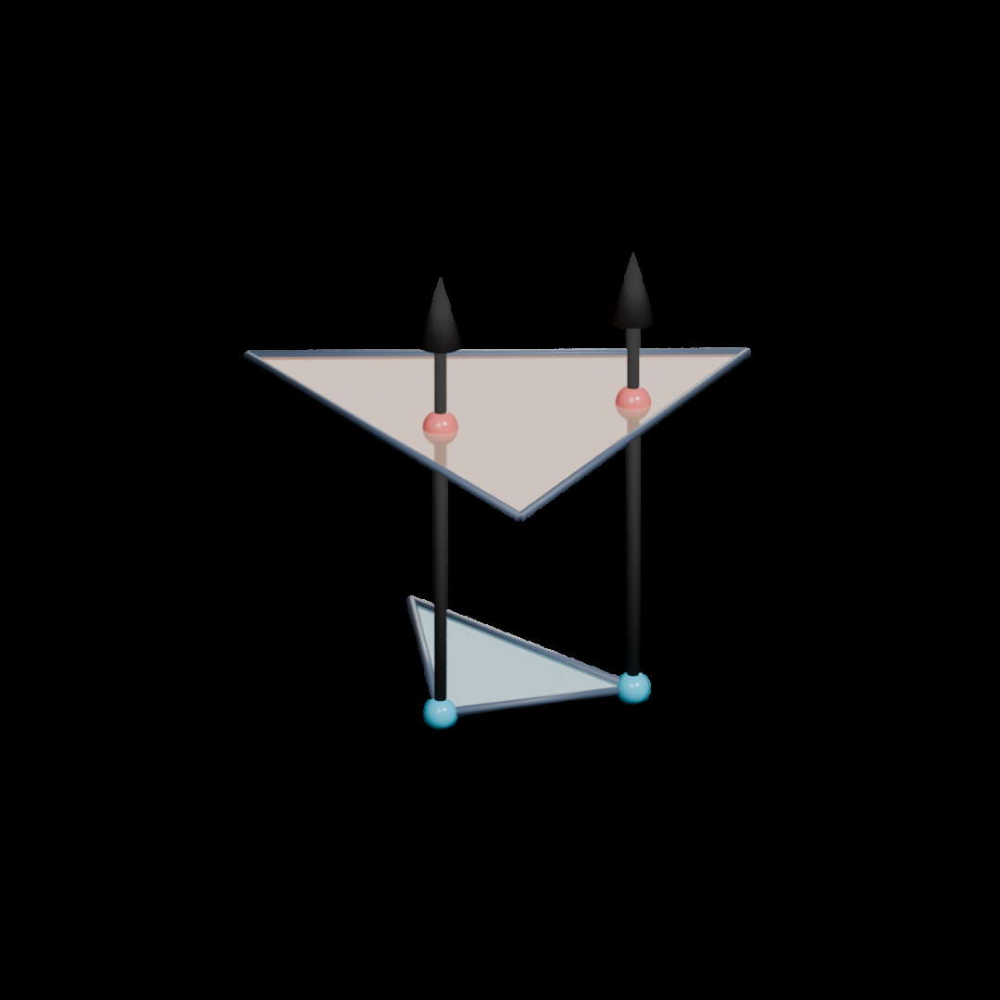
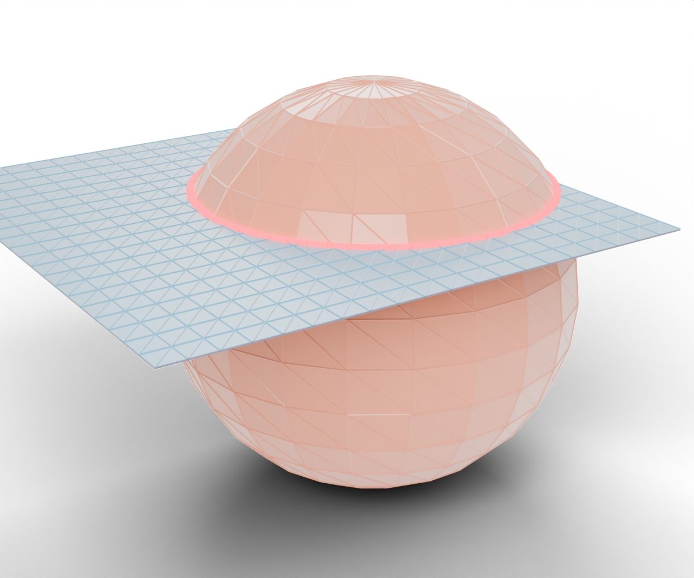
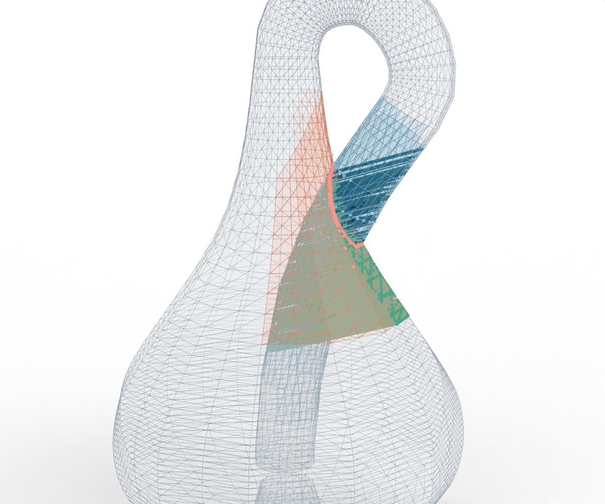

SIGGRAPH ASIA 2026 · STUDY NOTE
Type-Free Global Intersection Analysis
with Linear Displacement Fields
把已有的薄壳穿透转成可搜索的分离方向，再转回 Newton/PCG 能理解的 penalty pairs。
几何解相交方向优化17 pagesAdvanced
固定来源
代码阅读 SHAd361b71e4ae97b2604c3b704fe31299e3b5dfb2f
一句话理解
GIA 先猜 contour 类型，ICM 只缩短局部交线；本文固定当前几何，直接问：“哪条单位方向能用最小的 support 位移把这一整条 contour 分开？”
DC(r) = maxh ∈ S(r) δh(r) J(r) = DC(r)2 × Σh ∈ S(r) Ah
先从几何 seed 采样多个 basin，再在 hit 身份不变的局部区域做球面 Newton/Cauchy 试探。最终 hit 的 barycentric weights 固定，约束对节点位置是 affine，因此可以直接进入隐式 Newton/PCG。
方法流水线
1 · EF contour
adjacency flood-fill
两侧 anchors
adjacency flood-fill
两侧 anchors
→
2 · Ray evidence
VF / EE / reverse-FV
VF / EE / reverse-FV
→
3 · Cluster
双侧 product-complex
保留 anchored band
双侧 product-complex
保留 anchored band
→
4 · Search
10 seeds + IRLS
sphere refinement
10 seeds + IRLS
sphere refinement
→
5 · Solver
VF/EE penalty
Newton + PCG
VF/EE penalty
Newton + PCG


数字探索器
6,331初始 EF pairs
0Ours 最终 EF
88首次 EF=0 迭代
绿色：Ours 最终残余；淡珊瑚：论文表 2 的 ICM/GIA 残余。Wall time 覆盖完整 budget，不能直接当作 time-to-solution。
Synthetic：15,647 V / 30,780 F，作者报告 GPU 341.410 s、CPU 494.770 s。
候选方向与代价
滑块会更新 59-case success
Scatter axes
沿 contour support 的加权 scatter matrix 三个特征轴取正负方向，适合局部自相交的窄截面。
为什么需要多 basin？
命中身份和 cluster component 会在球面上离散跳变。固定 hit basin 内，δh(r)=νh/(nhTr) 可微；跨 basin 时重新 ray-cast，不能只相信局部 Hessian。
κ=108 → 59/59
κ=107 → 49/59
κ=1012 → 42/59
κ=107 → 49/59
κ=1012 → 42/59
实验证据
60,749 → 1,360mean raw hits / contour（adaptive k-ring）
152.5×geometric-mean reduction
100%878 contours 的 valid-hit parity
| 指标 | 论文报告 | 阅读边界 |
|---|---|---|
| 59-case success | Ours 100%，avg 16.51 iter，EF=0 | ISIR 是 closed-volume 专用；不是同类 cloth baseline |
| Shape fidelity | 平均 V/V0：soft .911 → bounded+200 IPC 1.006 | 只在 Jang 59-case 子集报告 |
| CPU/GPU breakdown | 866.3 ms → 542.3 ms；ray 648.3 → 90.3 ms | CSR 与 host evaluation 成为 GPU 主项 |
| Canonical | 七类达到 0 EF，表 2 多为 1–2 iter | 正文叙述写 2–4；当前 README 写 2–5，需区分版本 |

论文 Fig. 5：搜索域从 contour 向外扩张，frontier 收敛后停止。
论文 ↔ 当前代码
保持一致
- EF contour → VF/EE/reverse-FV ray evidence
- 双侧 hit adjacency + contour-connected culling
- adaptive k-ring 与 response frontier
- hit → standard VF/EE templates → Newton/PCG
需要明确的差异
- 代码 comparator 先比较 penetration_objective / coverage²
- CCR 支持 rest/current/AND/blend 工程模式
- 3 mm response offset 与 depth cap
- direction optimization CLI 默认 0；CUDA backend 不自动等于 GPU PRP evaluator
代码 README 自己写明：复杂 self-intersection 可能筛不出 restorative hits，刚体 hollow/concave 区域可能卡住；这里没有严格解缠保证。
边界与继续思考
- 单一线性 r 无法表达连续 twist 的空间变化流。
- CCR 和 k-ring 抑制空间泄漏，但没有 locality/global convergence theorem。
- IRLS 是局部 proposal，不是对非光滑 J 的全局等价重写。
- EF=0 不自动意味着 volume、strain、energy 和 topology 都合理。
- greedy conflict suppression 不是精确 WIS，顺序可能影响结果。
- 真实 GPU acceptance 需要初始化 submodule、编译 lcs_py 并记录 config。